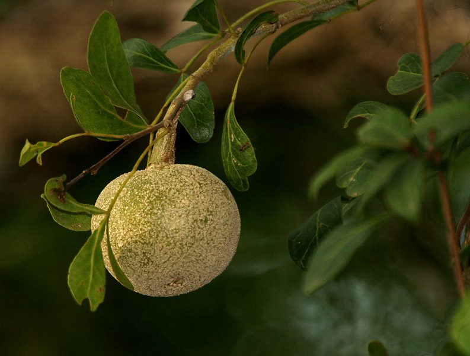

कैथाWood Apple
Limonia acidissima · Rutaceae · FLR-0044

- Scientific name
- Limonia acidissima L.
- Family
- Rutaceae
- Hindi
- कैथा
- Status here
- native
- IUCN
- not evaluated
When to look कब देखें
Expected mainly in March, April, May, June, July, August, September, October, November, December, January.
कैथा / Wood Apple
Limonia acidissima L. — Rutaceae
कैथा (कविठ / वुड एप्पल) — पूर्वी उत्तर प्रदेश के शुष्क क्षेत्रों, खेतों की मेड़ों और बगीचों के किनारों पर पाया जाने वाला एक छोटा, कांटेदार और सूखा-सहिष्णु (drought-tolerant) देशी पेड़ है। यह नींबू परिवार (Rutaceae) का सदस्य है। इसके पत्ते छोटे, गहरे हरे और सुगंधित होते हैं, जिन्हें मसलने पर नींबू जैसी महक आती है। वसंत ऋतु (मार्च-मई) में इसमें हल्के लाल या हरे-सफेद रंग के छोटे फूल आते हैं। इसका फल गोल, सख्त और पथरीले मटमैले भूरे रंग (grey wood-like shell) का होता है। फल के भीतर गहरे भूरे रंग का, चिपचिपा, रेशेदार और खट्टा-मीठा तीखा गूदा होता है। शरद ऋतु में पकने वाले कैथे की तीखी खुशबू पूर्वी उत्तर प्रदेश के ग्रामीण इलाकों की एक पहचान है। इसके फलों का उपयोग चटनी, शर्बत और पारंपरिक आचार (कौथे का अचार) बनाने में किया जाता है।
Quick Identification त्वरित पहचान
| Feature | Description |
|---|---|
| Form | Small to medium-sized tree (8–12 m) with a loose, thorny, irregular crown; branches are drooping |
| Spines | Sharp, straight spines (1–4 cm long) present at the leaf axils on younger branches |
| Leaves | Pinnate compound leaves (8–15 cm long) with 3–9 opposite leaflets; petiole and rachis are narrowly winged (flat-edged) |
| Flowers | Small (1.0–1.5 cm), dull red, pinkish, or greenish-white, arranged in loose terminal clusters |
| Fruit | Large, round, hard-shelled berry (5–10 cm diameter) with a rough, greyish-white, woody skin |
| Pulp | Dark brown, sticky, fibrous, with a strong aromatic, sour-sweet, and pungent smell when the shell is broken |
Field tip: Any thorny, small tree with flat-winged leaf stems, small leaflets smelling of citrus when crushed, and hard grey balls (like cricket balls) hanging in winter is a Wood Apple tree.
Morphology आकारिकी
Biometrics (typical measurements for specimens in Basti district):
| Feature | Measurement |
|---|---|
| Tree height | 8–12 m |
| Leaf length | 8–15 cm |
| Leaflet length | 2–4 cm; Width: 1.2–2 cm |
| Flower diameter | 1.0–1.5 cm |
| Fruit diameter | 5–10 cm |
Bark: Dark grey or blackish-brown, rough, thick, and vertically furrowed; older trunks have a wrinkled texture.
Leaves: The leaflets are obovate (egg-shaped), smooth-edged, and shiny green. The flattened, winged leaf stem (rachis) is a key diagnostic feature distinguishing it from other citrus relatives.
Fruit shell: The woody shell (pericarp) is about 3–4 mm thick, extremely hard, and requires a stone or hammer to crack open. The seeds are small, white, flat, and embedded throughout the pulp.
Associated Species / Interactions सहजीवी संबंध
Dry scrub anchor.
- Wildlife food: The fallen hard fruits are eaten by wild boars (
[MAM-0005 Wild Boar]), jackals ([MAM-0004 Golden Jackal]), and civets ([MAM-0012 Small Indian Civet]), which crack the shells using their teeth. Birds eat the pulp from cracked fruits. - Larval host: The leaves are a larval food host for the giant swallowtail butterflies (Papilio spp., relatives of
[INS-0005]and[INS-0020]), which lay eggs on citrus-family trees. - Acacia nesting: Often grows in association with Babool (
[FLR-0047]), creating dense, thorny thickets that protect nests of small birds like Babblers ([BRD-0035]).
Life Cycle / Phenology जीवन चक्र
- Leaf fall: Sheds its leaves in late winter (January–February) during the dry period.
- Flowering: Blooms in spring (March–May) alongside the emergence of new leaves.
- Fruit growth: Green hard fruits grow slowly through the summer and monsoon (June–October).
- Harvest & Ripening: Fruits ripen and fall to the ground in late autumn and winter (November–January). The shell remains hard, but the inner pulp turns dark brown and highly aromatic.
Pests and Diseases कीट और रोग
- Citrus Butterfly Caterpillar: Larvae of Papilio demoleus chew leaves of young saplings.
- Fruit Borer: Larvae of select moths bore into the young green fruit, causing premature drop.
- Sooty Mold: A black fungal coating that develops on leaves following aphid or scale insect infestations.
Agricultural / Human Relevance कृषि प्रासंगिकता
Local culinary fruit and dry-land farming.
- Culinary value: The pulp is a highly popular seasonal food in eastern UP. It is prepared as a spicy chutney with green chillies, sugar, and salt, or mixed with water and jaggery to make a cooling summer drink (kaithe ka sharbat). Unripe fruits are sliced and pickled (kaithe ka achar).
- Agroforestry: Due to its extreme drought tolerance and ability to grow in saline or degraded soils, it is planted on the margins of fields to provide a secondary income from fruit sales.
Traditional and Ethnobotanical Use
- Digestive remedy: The sour-sweet pulp is a traditional remedy for treating diarrhea, dysentery, and indigestion. It is considered an excellent digestive tonic.
- Gum health: The pulp is rubbed on the gums to cure scurvy and strengthen teeth.
- Anti-poison paste: The paste of the pulp or ground bark is applied traditionally to scorpion stings and insect bites to relieve pain.
- Asthma relief: Leaf juice mixed with honey is used in traditional Ayurvedic remedies to treat chronic cough and asthma in children.
- Bark cosmetics: The ground bark paste is used locally as a cooling face pack to treat acne and sunspots.
Expected Locally स्थानीय रूप से अपेक्षित
Not a field record. Written from published accounts for eastern Uttar Pradesh. No confirmed local sighting yet — if you have seen it, that is what the atlas needs.
अभी तक स्थानीय पुष्टि नहीं। यह विवरण प्रकाशित स्रोतों से है, किसी अवलोकन से नहीं।
Commonly found on agricultural bunds and dry backyard plots in Harraiya and Vikramjot blocks of Basti district. Sighted often in degraded sandy clay fields. The distinct smell of ripening wood apples under the trees is a common sensory marker of winter afternoons in rural Basti.
Distribution वितरण
Global range: Native to the Indian Subcontinent and Southeast Asia, including India, Pakistan, Sri Lanka, Bangladesh, and Myanmar.
In India: Widespread in dry deciduous forest tracts, plains, and central dry zones.
In Uttar Pradesh: Present in all plains districts, particularly common in the southern Bundelkhand margins and dry eastern plains.
In Basti district / eastern UP: Common native resident; found in backyards and wasteland borders.
Research Questions शोध प्रश्न
- What is the density of Limonia acidissima trees on agricultural bunds in Basti, and how does their presence affect the soil moisture of adjacent crop plots? / बस्ती में खेतों की मेड़ों पर कैथे के पेड़ों की संख्या कितनी है, और ये पास के खेतों की नमी को कैसे प्रभावित करते हैं?
- How does the chemical composition of Limonia acidissima pulp change during the ripening phase from October to December? / अक्टूबर से दिसंबर के दौरान कैथे के पकने पर उसके गूदे की रासायनिक संरचना में क्या बदलाव आते हैं?
- Does the extract of Limonia acidissima leaf display antimicrobial activity against common plant-pathogenic bacteria?
- Which wild mammal species is the primary seed disperser of Limonia acidissima in the Ghaghra River basin?
- Can school children test if a wood apple seed germinates faster when extracted from a ripe fallen fruit versus an unripe green one? — A simple seed viability and growth experiment.
Similar Species मिलती-जुलती प्रजातियाँ
| Species | Key Difference | हिंदी |
|---|---|---|
Aegle marmelos (Bel tree [FLR-0036]) | Leaves are trifoliate (three leaflets, not winged); branches are less thorny; fruit is smooth, greenish-yellow, and sweet; pulp is orange and sticky. | बेल — तीन पत्ती संरचना, पीला मीठा फल |
| Feroniella oblata (Indochinese Wood Apple) | Leaves have smaller leaflets; fruit is smaller (3–5 cm) and highly ridged; rare in India. | छोटा कैथा — छोटे पत्ते, छोटा फल |
Ziziphus mauritiana (Ber tree [FLR-0046]) | Leaves are simple, oval, with three main veins from the base; fruits are small, smooth, yellow-red drupes with a hard stone. | बेर — सरल पत्ते, छोटा मीठा फल |
Taxonomy & Classification वर्गीकरण
Original description. Carl Linnaeus described the Wood Apple as Limonia acidissima in 1762 in the second edition of Species Plantarum (p. 554). The type locality was India. The genus name Limonia comes from the Arabic limun (lemon). The specific name acidissima is the superlative of the Latin acidus, meaning "extremely sour."
Subspecies. Monotypic — no subspecies are currently recognised.
Family and order placement. Placed in the order Sapindales, family Rutaceae (citrus family), subfamily Aurantioideae.
Phylogenetic notes. Limonia acidissima is the only species in the monotypic genus Limonia. It represents a distinct wild relative of commercial Citrus species, characterized by its hard, woody fruit shell and winged rachis.
IUCN status rationale. Not assessed (NE) by the IUCN Red List. It is a widely distributed native species in South Asia, common in both wild scrublands and cultivated gardens, facing no conservation threats.
Photo Gallery फोटो गैलरी
References संदर्भ
- Linnaeus, C. (1762). Species Plantarum. Laurentii Salvii, Holmiae, ed. 2, p. 554. [original description]
- Brandis, D. (1906). Indian Trees. Archibald Constable & Co., London.
- Hooker, J. D. (1875). The Flora of British India. Vol. 1. L. Reeve & Co., London.
- Swingle, W. T. (1967). The botany of Citrus and its wild relatives. In: The Citrus Industry. University of California Press, Berkeley.
- Botanical Survey of India. State Flora Series: Flora of Uttar Pradesh. BSI, Kolkata.
- GBIF Occurrence Data — Limonia acidissima, South Asia (2026). GBIF taxon key: 5421342.
Source file: species/flora/trees/wood_apple.md